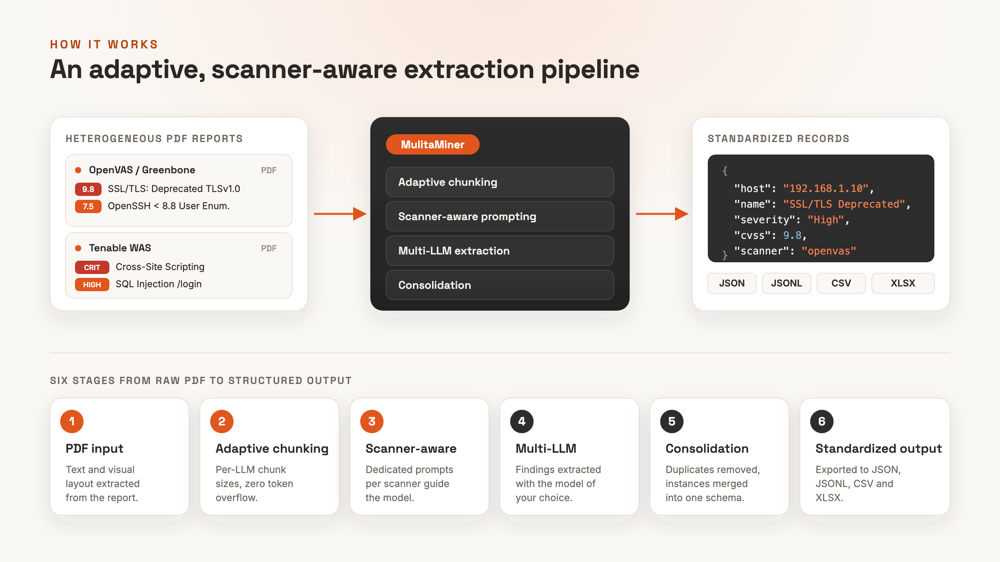
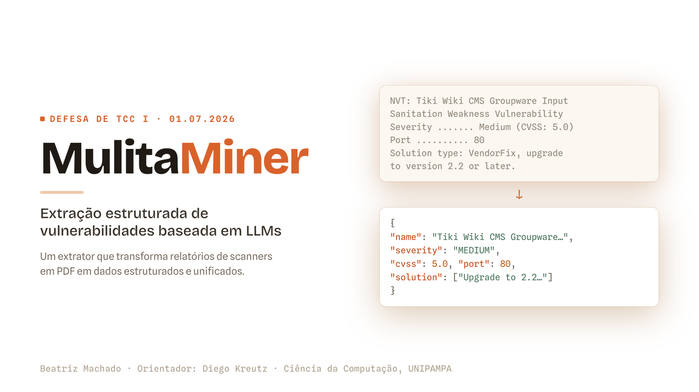

Security analysis
Automated extraction of vulnerabilities from scanner reports.
Automated · Structured · Multi-LLM
Honorable Mention · WRSeg 2025MulitaMiner turns unstructured PDF reports from security scanners into consistent, analysis-ready vulnerability records.
What it is
Security scanners such as OpenVAS and Tenable WAS produce long, heterogeneous PDF reports.
MulitaMiner automates this with an LLM-based pipeline.
Automated extraction of vulnerabilities from scanner reports.
Support for CAIS formats used in corporate systems.
Comparative evaluation of different LLMs on the same task.
How it works
Six stages turn a raw PDF into standardized, multi-format output.
Scan Report · Host 192.168.1.10
Web App Scanning · target.example.com
{
"host": "192.168.1.10",
"name": "SSL/TLS Deprecated",
"severity": "High",
"cvss": 9.8,
"scanner": "openvas"
}Text and visual layout are extracted from the scanner report.
Chunk sizes are computed per LLM, guaranteeing zero token overflow.
Dedicated prompts per scanner guide the model.
Findings are extracted with the model of your choice.
Duplicates are removed and instances merged into a single schema.
Records are exported to JSON, JSONL, CSV and XLSX.

Capabilities
OpenAI, DeepSeek and Groq via a simple JSON config.
Specialized strategies for OpenVAS, Tenable WAS and CAIS.
A token-budget formula sizes each chunk per model.
Scored against baselines with BERTScore and ROUGE-L.
JSON, JSONL, CSV and XLSX, layout preserved.
Batch runs with checkpoints and cost reports.
Evidence
Evaluated against ground-truth records and structured baselines.
6,700 vulnerabilities from 129 OpenVAS reports.
OpenVAS / Greenbone, Tenable WAS, CAIS variants.
GPT-4, GPT-5, DeepSeek, Llama 3/4, Qwen 3.
Quick start
Three steps to extract vulnerabilities from a sample OpenVAS report.
git clone https://github.com/AnonShield/MulitaMiner.git
cd MulitaMiner
python3 -m venv .venv && source .venv/bin/activate
pip install -r requirements.txtAPI_KEY_DEEPSEEK = "your-deepseek-api-key"
API_KEY_GPT4 = "your-openai-api-key"
API_KEY_LLAMA3 = "your-groq-api-key"python3 main.py \
--input test/openvas/OpenVAS_JuiceShop.pdf \
--llm deepseek --scanner openvas \
--allow-duplicates --output-file openvas_testFull installation, usage and configuration guides are in the repository. Read the full documentation
Publication
Escola Regional de Redes de Computadores (ERRC), SBC
This work proposes an automated, LLM-based method to extract and structure vulnerabilities.
Open in the SBC library@inproceedings{mulitaminer2026,
title = {Structured Extraction of Vulnerabilities in OpenVAS
and Tenable WAS Reports Using LLMs},
author = {Machado, Beatriz and Lautert, Douglas and
Kapelinski, Cristhian and Kreutz, Diego},
booktitle = {Escola Regional de Redes de Computadores (ERRC)},
publisher = {Sociedade Brasileira de Computa\c{c}\~{a}o (SBC)},
year = {2026},
url = {https://sol.sbc.org.br/index.php/errc/article/view/39195}
}Presentation
The slide deck presented at the TCC I defense, walking through the problem, the pipeline and the results.
